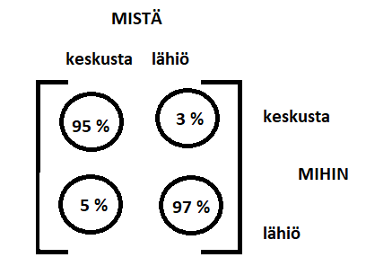

Lisää sovelluksia
Contents
Lisää sovelluksia#
Matriiseja voidaan soveltaa monenlaisissa ennusteissa. Tarkastellaan tässä todennäköisyyslaskentaan liittyviä tilansiirtomatriiseja sekä populaatioennusteisiin liittyviä Leslien matriiseja.
Tilansiirtomatriisit#
Matriisilaskenta toimii hyvin ongelmissa, joissa halutaan tietää, mitkä ovat joidenkin toisensa poissulkevien tapahtumien todennäköisyydet usean edeltävän vaiheen jälkeen, kun jokaisen tapahtuman todennäköisyys riippuu edellisestä tapahtumasta. Tällaista ”todennäköisyysketjua” sanotaan Markovin ketjuksi (Andrei Markov).
Tarkastellaan tapahtumia \(A\) ja \(B\). Oletetaan, että ovat vaihtoehtoisia siten, että jompikumpi niistä tapahtuu varmasti ketjun jokaisessa vaiheessa. Vaiheet voivat olla vaikkapa peräkkäistä päiviä, ja tapahtumat voivat olla esimerkiksi sadesää ja poutainen sää. Todennäköisyysketjuun rakennetaan ns. tilansiirtomatriisi \(T\), jota itsensä kanssa kertomalla päästään aina seuraavan vaiheen tapahtumien todennäköisyyksiin. Yksinkertaisessa esimerkissä tilansiirtomatriisi on seuraava:
\(T=\begin{bmatrix}P_{AA}&P_{BA}\\P_{AB} & P_{BB}\end{bmatrix}\),
missä
\(P_{AA}\) kuvaa todennäköisyyttä sille, että asia \(A\) tapahtuu vaiheessa 2, kun vaiheessa 1 on tapahtunut asia \(A\),
\(P_{BA}\) kuvaa todennäköisyyttä sille, että asia \(A\) tapahtuu vaiheessa 2, kun vaiheessa 1 on tapahtunut asia \(B\),
\(P_{AB}\) kuvaa todennäköisyyttä sille, että asia \(B\) tapahtuu vaiheessa 2, kun vaiheessa 1 on tapahtunut asia \(A\),
\(P_{BB}\) kuvaa todennäköisyyttä sille, että asia \(B\) tapahtuu vaiheessa 2, kun vaiheessa 1 on tapahtunut asia \(B\).
Todennäköisyyslaskennassa tapahtumia kuvaavat todennäköisyydet ovat aina välillä \(0 \ldots 1\) siten, että mahdottoman tapahtuman todennäköisyys on nolla ja varman tapahtuman todennäköisyys on yksi. Todennäköisyys sille, että joko \(A\) tai \(B\) tapahtuu, on 1, sillä olemme olettaneet, että muitakaan vaihtoehtoja ei ole (esimerkiksi: jollakin todennäköisyydelle huomenna sataa ja jollakin todennäköisyydellä ei sada, mutta varmasti joko sataa tai ei sada). Tilansiirtomatriisissa tämä huomioidaan siten, että jokaisessa sarakkeessa alkioiden summan on oltava 1.
Ketjun lähtötilannetta kuvaa matriisi \(p_0=\begin{bmatrix} A_0 \\B_0\end{bmatrix}\), missä \(A_0\) ja \(B_0\) ovat sopivat alkutilanteet. Ne voivat olla todennäköisyyksiä tai lukumääriä. Esimerkiksi jos \(A\) kuvaa sadetta ja \(B\) poutaa, ja alkutilanteessa sataa, niin \(A_0=1\) ja \(B_0=0\). Toisaalta \(A_0\) ja \(B_0\) voivat olla myös tilanteissa \(A\) tai \(B\) olevien yksilöiden lukumäärää: esimerkiksi kaupungissa tai maalla asuvien ihmisten määrää.
Ketjun seuraava tilanne saadaan laskemalla \(p_1=T p_0\). Yleisesti, kun siirtymä tilanteesta toiseen toistuu \(n\) kertaa, niin matriisi \(p_n\), joka sisältää lukumäärät tai todennäköisyydet tapahtumille \(A\) ja \(B\), saadaan laskutoimituksesta \(p_n=T^n p_0\).
Huom! Matriisin potenssiinkorotus tarkoittaa samaa kuin lukujen potenssiinkorotus, eli matriisia kerrotaan itsellään. Matriisin alkioita ei siis koroteta yksittäin potenssiin \(n\).
Esim. Eräällä paikkakunnalla tunnetaan kansanperinteestä, että jos tänään sataa, niin huomennakin sataa 60 % todennäköisyydellä. Jos tänään ei sada, niin huomenna sataa vain 30 % todennäköisyydellä. Millä todennäköisyydellä ylihuomenna sataa, jos tänään ei sada?
Ratkaisu
Alkutilanteessa ei sada, eli tilanne on \(p_0=\begin{bmatrix}0 \\1 \end{bmatrix}\). Merkitään sadetta tapahtumana \(A\) ja poutaa tapahtumana \(B\).
Tilansiirtomatriisiin saadaan helposti todennäköisyydet \(P_{AA}\) ja \(P_{BA}\):
\(T=\begin{bmatrix} 0.6 & 0.3 \\ P_{AB} & P_{BB} \end{bmatrix}\)
Alariville voidaan päätellä todennäköisyydet \(P_{AB}=1-0.6=0.4\) ja \(P_{BB}=1-0.3=0.7\).
Tilansiirtomatriisi on siis \(T=\begin{bmatrix} 0.6 & 0.3 \\ 0.4 & 0.7 \end{bmatrix}\).
Huomisen sääennuste on tällöin
\(p_1=Tp_0 = \begin{bmatrix}0.6 & 0.3 \\ 0.4 & 0.7\end{bmatrix} \begin{bmatrix}0 \\ 1\end{bmatrix} = \begin{bmatrix} 0.3 \\ 0.7 \end{bmatrix}\).
Ylihuomisen ennuste saadaan kertomalla tämä uusi alkutilanne jälleen tilansiirtomatriisilla:
\(p_2=Tp_1 = \begin{bmatrix}0.6 & 0.3 \\ 0.4 & 0.7\end{bmatrix} \begin{bmatrix}0.3 \\ 0.7\end{bmatrix} = \begin{bmatrix} 0.39 \\ 0.61 \end{bmatrix}\).
Sama vastaus saadaan suoraan laskemalla \(p_2=T^2 p_0\).
Octavella laskun voi suorittaa seuraavasti: T=[0.6 0.3;0.4 0.7], T^2*[0;1]
Esim. Erään kaupungin keskustasta (A) muuttaa vuosittain lähiöihin (B) 5 % keskusta-alueen asukkaista, ja lähiöistä muuttaa keskustaan 3 % lähiöiden asukkaista. Nyt keskustassa asuu 100 000 ihmistä ja lähiöissä 150 000. Mitkä ovat keskustan ja lähiöiden asukasluvut
a) 1 vuoden kuluttua,
b) 10 vuoden kuluttua?
Ratkaisu

Muodostetaan tilansiirtomatriisi kuvan avulla: \(T=\begin{bmatrix}0.95&0.03\\0.05&0.97\end{bmatrix}\)
Kerätään alkutilannetta kuvaavaan matriisiin nykyiset asukasmäärät:
\(p_0=\begin{bmatrix}100 000\\150 000\end{bmatrix}\)
a) \(p_1=Tp_0=\begin{bmatrix} 0.95\cdot 100 000+0.03 \cdot 150 000 \\ 0.05\cdot 100 000+0.97\cdot 150 000 \end{bmatrix}=\begin{bmatrix}99 500 \\ 150 500 \end{bmatrix}\)
b) Koska \(p_1=Tp_0\), niin \(p_2=Tp_1=TTp_0=T^2p_0\), \(p_3=T^3p_0\) jne. ja edelleen \(p_{10}=T^{10} p_0\).
Siis 10 vuoden kuluttua
\(p_{10}=\begin{bmatrix} 0.95&0.03 \\ 0.05&0.97\end{bmatrix}^{10} \begin{bmatrix}100 000 \\ 150 000\end{bmatrix}=\begin{bmatrix} 96 465 \\ 153 540 \end{bmatrix}\).
Lasku \(T^{10}\) on suoritettu tietokoneella.
Leslien matriisit#
Leslien matriisin avulla voidaan ennustaa esimerkiksi tietyn alueen eläinmäärän kehitystä. Ennusteessa tehdään yksinkertaistettuja oletuksia populaation ekologiasta. Ennusteessa käytettävä Leslien matriisi sisältää tiedon siitä, kuinka suuri osuus tietyn ikäryhmän eläimistä säilyy hengissä seuraavaan ikäryhmään siirtymiseen asti, ja siitä, kuinka monta poikasta kyseisen ikäryhmän eläimet tuottavat.
Esim. Oletetaan, että kasvattamasi eläimet lisääntyvät ja pysyvät hengissä seuraavan taulukon mukaan:
Ikä (vuosia) |
Poikasia keskim. |
Todennäk. selvitä seur. ikäryhmään |
|---|---|---|
\(0 \leq x \lt 2\) |
0 |
0.7 |
\(2 \leq x \lt 4\) |
0.5 |
0.9 |
\(4 \leq x \lt 6\) |
1.1 |
0.8 |
\(6 \leq x \lt 8\) |
1.3 |
0.7 |
\(8 \leq x \lt 10\) |
0.8 |
0.3 |
\(10 \leq x \lt 12\) |
0.4 |
0 |
Aloitat eläinten kasvatuksen ostamalla 40 kpl 2-vuotiaita eläimiä. Kuinka paljon ja minkä ikäisiä eläimiä sinulla on 10 vuoden päästä?
Muodostetaan Leslien matriisi \(L\), johon tulee ensimmäiselle riville poikasten määrät ja 2. riviltä alkaen lävistäjälle selviytymistodennäköisyydet. Kaikki muut alkiot ovat nollia. Alkuperäistä eläinmäärää kuvaa matriisi \(E\), jonka rivit vastaavat ikäryhmiä ja alkiot kertovat eläinten määrän kyseisessä ikäryhmässä.
\(L=\begin{bmatrix} 0&0.5&1.1&1.3&0.8&0.4 \\ 0.7&0&0&0&0&0 \\ 0&0.9&0&0&0&0 \\ 0&0&0.8&0&0&0 \\ 0&0&0&0.7&0&0 \\ 0&0&0&0&0.3&0 \end{bmatrix}, E=\begin{bmatrix}0\\40\\0\\0\\0\\0\end{bmatrix}\)
Kahden vuoden kuluttua eläimiä on
\(LE=\begin{bmatrix} 0&0.5&1.1&1.3&0.8&0.4 \\ 0.7&0&0&0&0&0 \\ 0&0.9&0&0&0&0 \\ 0&0&0.8&0&0&0 \\ 0&0&0&0.7&0&0 \\ 0&0&0&0&0.3&0 \end{bmatrix} \begin{bmatrix} 0\\40\\0\\0\\0\\0 \end{bmatrix} = \begin{bmatrix} 0.5\cdot 40 \\ 0 \\ 0.9⋅40 \\ 0 \\0 \\ 0 \end{bmatrix} = \begin{bmatrix} 20\\0\\36\\0\\0\\0 \end{bmatrix}\).
Siis 40 alkuperäistä otusta on tuottanut 20 poikasta ikäryhmään 0-2 v, ja lisäksi 90 % eli 36 kpl alkuperäisistä eläimistä on siirtynyt seuraavaan ikäryhmään.
Tilanne kymmenen vuoden kuluttua saadaan laskemalla (tietokoneella)
\(L^5 E \approx \begin{bmatrix} 58 \\ 31 \\ 28 \\ 20 \\ 7 \\0\end{bmatrix}\).
Tässä tietysti on oletettu, että eläimiä ei alkuhankinnan jälkeen ole ostettu tai myytykään. Huomaa myös, että tässä ikäluokkia käsitellään kahden vuoden jaksoina; siksi kymmenen vuotta vastaa viidenteen potenssiin korotusta.